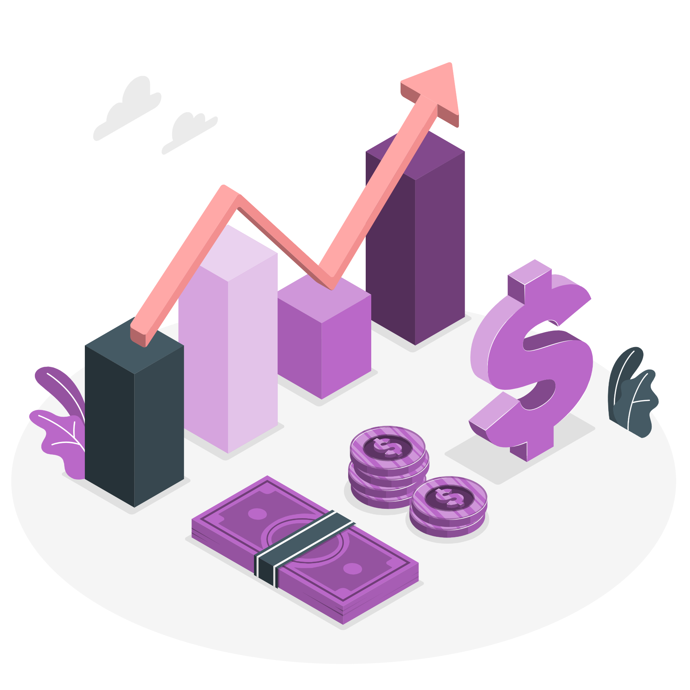
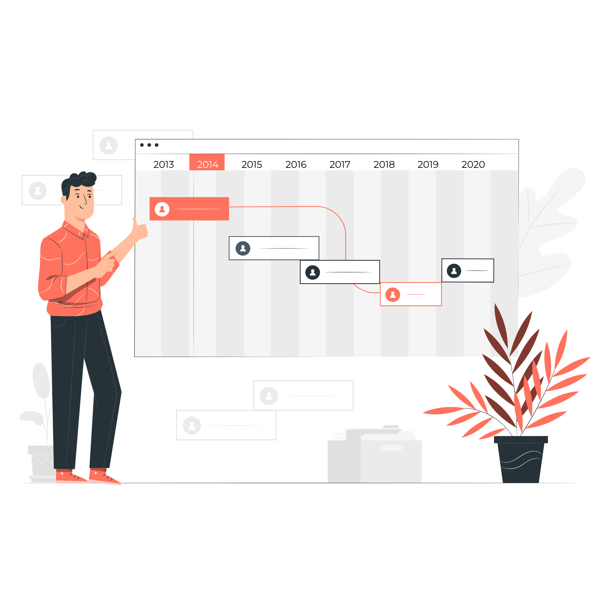

CUSTOS
Custos e Horas Registradas em cada projeto. Ver exemplo
PLANILHAS
Dados para Análises Específicos.
Ver exemplo
HORAS POR PROJETOS
Saiba de forma detalhada em qual cliente e projeto aspessoas mais investiram tempo.

Ver exemplo
LINHA DO TEMPO
Tarefas representadas em uma linha do tempo. Ver exemplo
ESFORÇO POR TIPO DE TAREFA
Percentual de horas gastas por Tipo de Tarefa,em cada cliente.
Ver exemplo
ALOCAÇÃO DE PESSOAS
Como as pessoas estão se dividindo entre cadacliente e seus projetos.

Ver exemplo
HORAS DISPONÍVEIS
Planeje os próximos passos dos projetos.
Ver exemplo
HORAS REGISTRADAS
Saiba as horas registradas por usuário em cada equipe.
Ver exemplo
ORÇADO VS REALIZADO
Custo orçado comparado ao realizado por mêspor cliente.